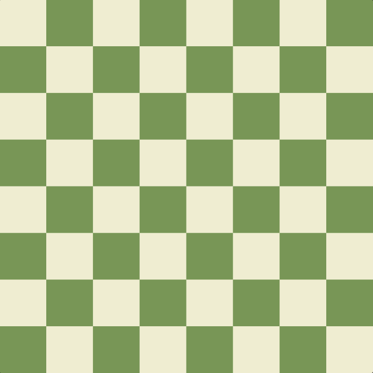
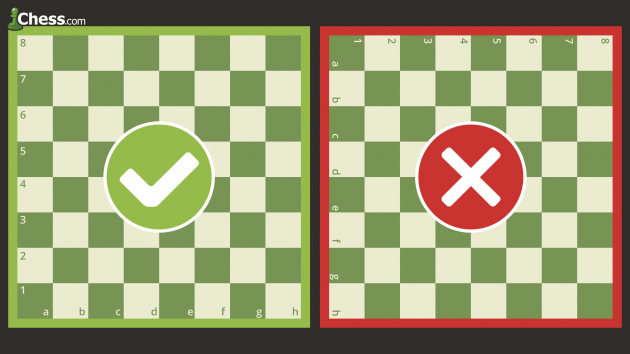
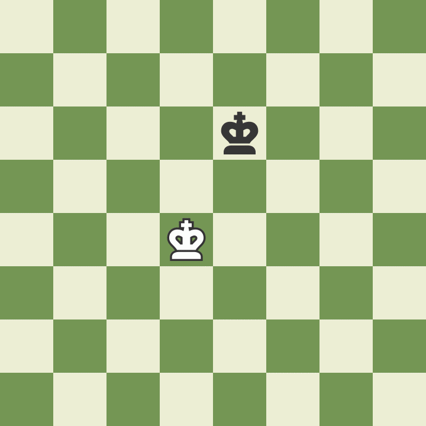
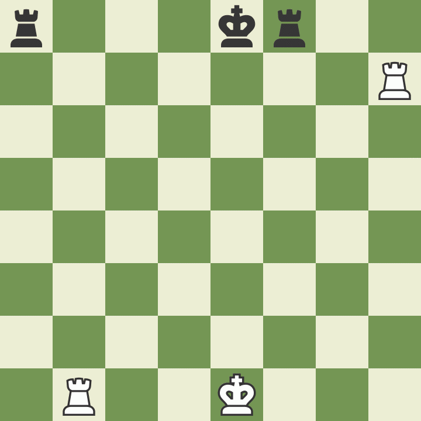
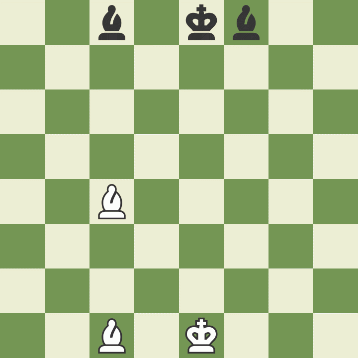
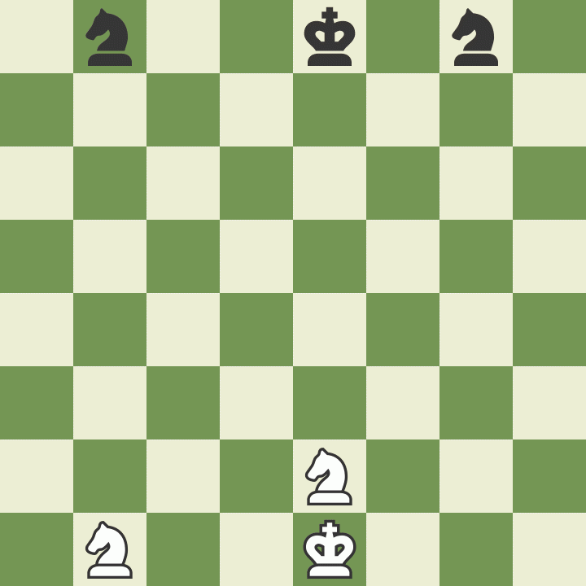
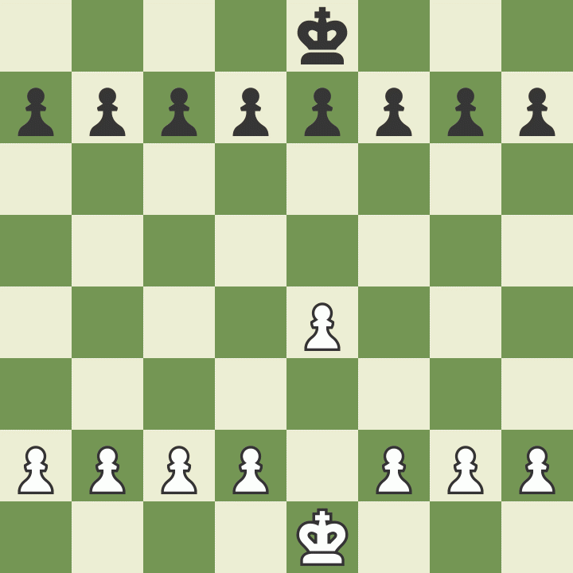

Step 1.
How to Setup the Chessboard At the beginning of the game the chessboard is laid out so that each player has the white (or light) color square in the bottom right-hand side.
The chess pieces are then arranged the same way each time. The second row (or rank) is filled with pawns. The rooks go in the corners, then the knights next to them, followed by the bishops, and finally the queen, who always goes on her own matching color (white queen on white, black queen on black), and the king on the remaining square.
Step 2. How the Chess Pieces Move Each of the 6 different kinds of pieces moves differently. Pieces cannot move through other pieces (though the knight can jump over other pieces), and can never move onto a square with one of their own pieces. However, they can be moved to take the place of an opponent's piece which is then captured. Pieces are generally moved into positions where they can capture other pieces (by landing on their square and then replacing them), defend their own pieces in case of capture, or control important squares in the game. How to Move the King in Chess The king is the most important piece, but is one of the weakest. The king can only move one square in any direction - up, down, to the sides, and diagonally.
The king may never move himself into check (where he could be captured). When the king is attacked by another piece this is called "check". How to Move the Queen in Chess The queen is the most powerful piece. She can move in any one straight direction - forward, backward, sideways, or diagonally - as far as possible as long as she does not move through any of her own pieces. And, like with all pieces, if the queen captures an opponent's piece her move is over. Notice how the white queen captures the black queen and then the black king is forced to move.
How to Move the Rook in Chess The rook may move as far as it wants, but only forward, backward, and to the sides.The rooks are particularly powerful pieces when they are protecting each other and working together!
How to Move the Bishop in Chess The bishop may move as far as it wants, but only diagonally. Each bishop starts on one color (light or dark) and must always stay on that color. Bishops work well together because they cover up each other's weaknesses.
How to Move the Knight in Chess Knights move in a very different way from the other pieces – going two squares in one direction, and then one more move at a 90 degree angle, just like the shape of an “L”.Knights are also the only pieces that can move over other pieces.
How to Move the Pawn in Chess
Pawns are unusual because they move and capture in different ways: they move forward, but capture diagonally. Pawns can only move forward one square at a time, except for their very first move where they can move forward two squares.Pawns can only capture one square diagonally in front of them. They can never move or capture backwards. If there is another piece directly in front of a pawn he cannot move past or capture that piece.
